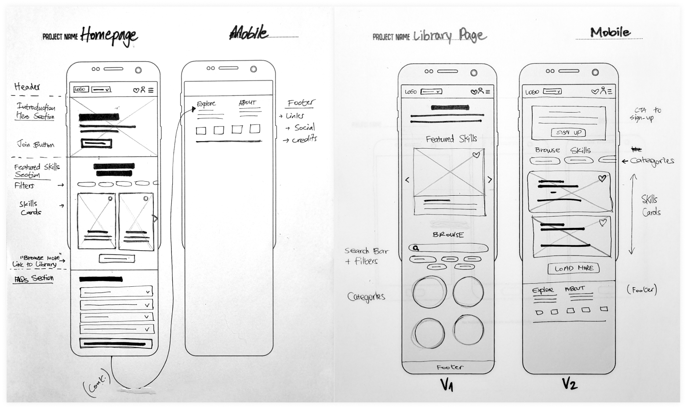
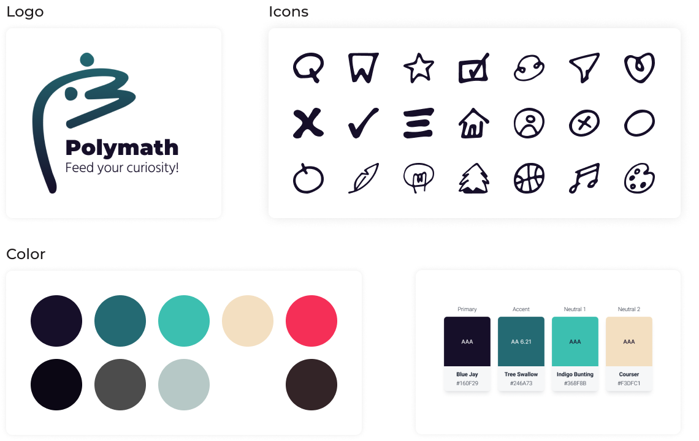
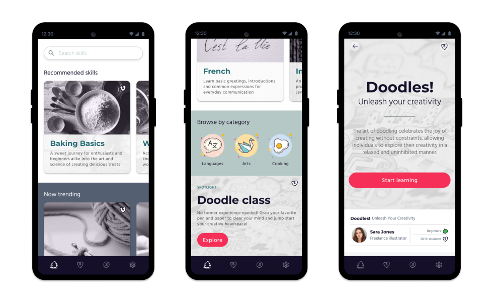
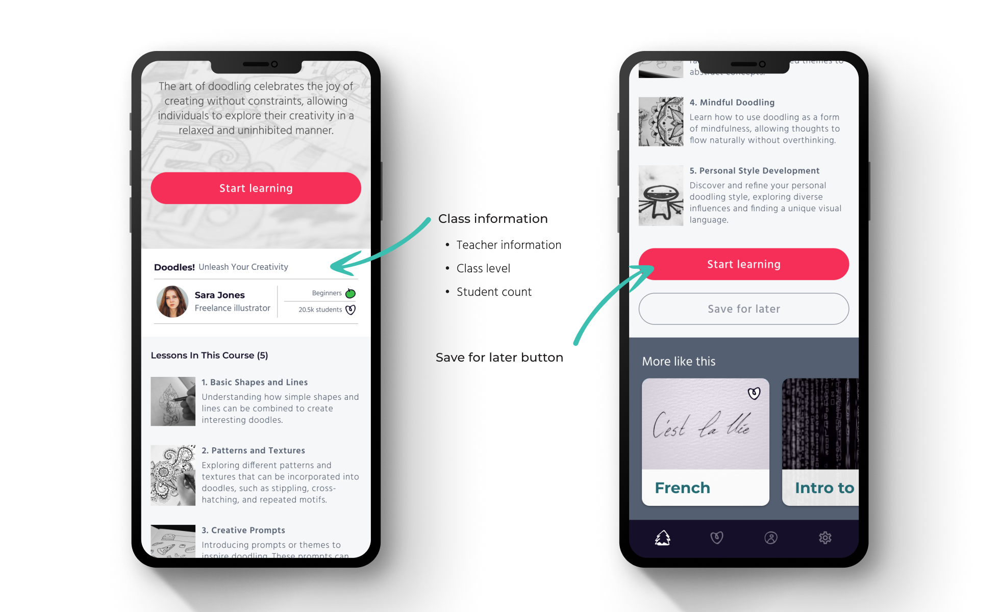

Polymath
Polymath is an expansive skill learning hub. It's an easy, accessible and fun way to learn new skills, offering both in-depth resources, features and learning tools.
Background
Learning new skills boosts personal growth and adaptability, empowering individuals to navigate challenges and seize opportunities with confidence. However, people can sometimes find it difficult to integrate learning a new skill into their everyday life. Finding the right time within our daily tasks, along with the ability to sit and focus, are becoming a challenge.

Research
Goals and Methodologies
To know what is holding users back from pursuing their learning goals, I used user interviews and surveys. My goal was to hear their stories of how, when and where they want to incorporate learning in their daily schedule.
Affinity Map

Ideation
After sorting all the responses my interviewees shared with me I could define main pain points:
- Some people need social interactions to keep motivation up and share their journey.
- Some people could use a platform / tool to manage and track the learning process.
- Some people find it challenging integrating learning a new skill into their everyday life.
Personas
I used my research insights to start conceptualizing my design. I was particularly interested in the social aspect of the learning process. My first step was to define personas who could benefit from the app.
Storyboards
Product Roadmapping

Design
After getting an idea of what I wanted to create with this project, I outlined key screens with wireframes.

Create a Brand
The app's look and feel is playful but at the same time professional. It's meant to look fun without looking too childish, showing that it is a professional learning platform for adults, encouraging the users to explore.
Testing and Iterating
After creating the basic UI kit and branding elements, I applied it to create high-fidelity wireframes and a prototype for testing.
Iterations
To evaluate the effectiveness and user-friendliness of the design, participants were asked to complete the task of learning a new skill. The prototype was created in Figma and the tests were recorded by Lookback.
All 5 participants completed the task. These were their top recommendations:
- Reduce images size
- Categories icons don't match overall design
- Can add more info about the class, such as time to complete
- Can add "save for later" button on skill's page
Following my usability testing comments, I have made the following changes:
Key Takeaways
This project gave me an opportunity to understand the importance of gathering and incorporating user feedback into design iterations to continuously improve the app's usability and effectiveness. It was an insightful case of understanding user needs and preferences through research.